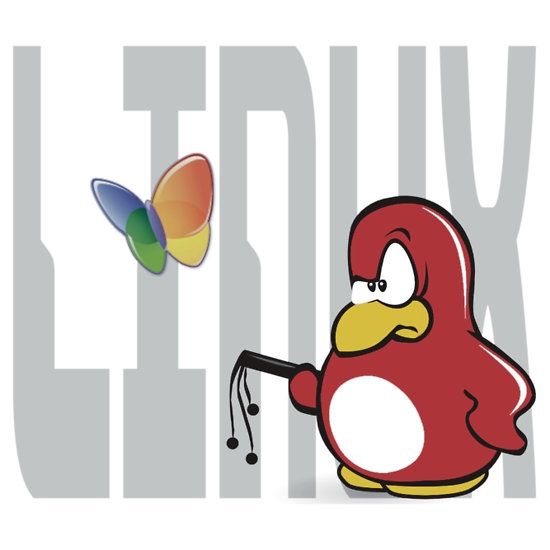

Introduction
Seg-Flux is a program written in C capable of handling txt and csv files;
searching through, creating, adding data to and filtering csvs
aswell as creating and inputing data into txt files
Technologies Used
The C programing language.
Git for version control, GitHub for deployment and storage.
VsCode for file managment, Nvim for quick script changes.
Git for version control, GitHub for deployment and storage.
VsCode for file managment, Nvim for quick script changes.
Features
Key Features:
- fast, reliable file handling
- easy to use, terminal interface
- terminal native, light-weight
- Linux compatibility
- fast, reliable file handling
- easy to use, terminal interface
- terminal native, light-weight
- Linux compatibility

Limitations
There are limitations to this app however:
- Inability to parse jsons
- No TUI
- Potential memory issues
- Inability to parse jsons
- No TUI
- Potential memory issues
GitHub Repo
This project is open source, you can read, modify and learn from the code.
To find more about this project, and to contribute to it, you can check out
my repo
To find more about this project, and to contribute to it, you can check out
my repo